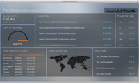
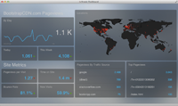

<?php 
	include 'inc/head.min.inc'; 
    include 'inc/nav.inc';
?>
	
	<!-- Uptime -->

	<div class="main">
			<div class="container">
				<div class="row-fluid">
					<div class="span12">

						<div class="tabbable">
							<ul class="nav nav-tabs">
								<li class="active"><a href="#pulse" data-toggle="tab">Pulse</a></li>
							</ul>
						</div>

						<div class="tab-content" style="padding: 10px;">
							<div class="tab-pane active" id="pulse">
								<div class="row-fluid">
									<div class="media">
								              <a class="pull-left">
								                
								              </a>
								              <div class="media-body">
								                <h4 class="media-heading">What is PULSE?</h4>
								                PULSE is a set of Real-Time Analytic Dashboards that display what is happening on BootstrapCDN.  In the spirit of openness we wanted to make sure that the BootstrapCDN Community had a way to measure the activity... We teamed up with the fine folks at Leftronic to accomplish this goal.<br><br><br>
								              </div>
								            </div>
									</div>
									
										<div class="span10 offset1">
											<div class="span3">
												<a href="http://pulse.bootstrapcdn.com/day" target="_blank">
												<p class="text-center"><span class="label label-inverse">Daily Pulse</span></p>
												</a>
											</div>
											<div class="span3">
												<a href="http://pulse.bootstrapcdn.com/week" target="_blank">
												<p class="text-center"><span class="label label-inverse">Weekly Pulse</span></p>
												</a>
											</div>
											<div class="span3">
												<a href="http://pulse.bootstrapcdn.com/month" target="_blank">
												<p class="text-center"><span class="label label-inverse">Monthly Pulse</span></p>
												</a>
											</div>
											<div class="span3">
												<a href="http://pulse.bootstrapcdn.com/ga" target="_blank">
												<p class="text-center"><span class="label label-inverse">Pageviews</span></p>
												</a>
											</div>
												<div class="row">
													<p class="text-center"><br><a href="http://leftronic.com" target="_blank"></a></p>
												</div>
								        	</div>
							</div>	
						</div>

					</div>
				</div>
			</div> <!-- /container -->
		</div>
	</div>

<?php
	include 'inc/footer.inc';
?>	
